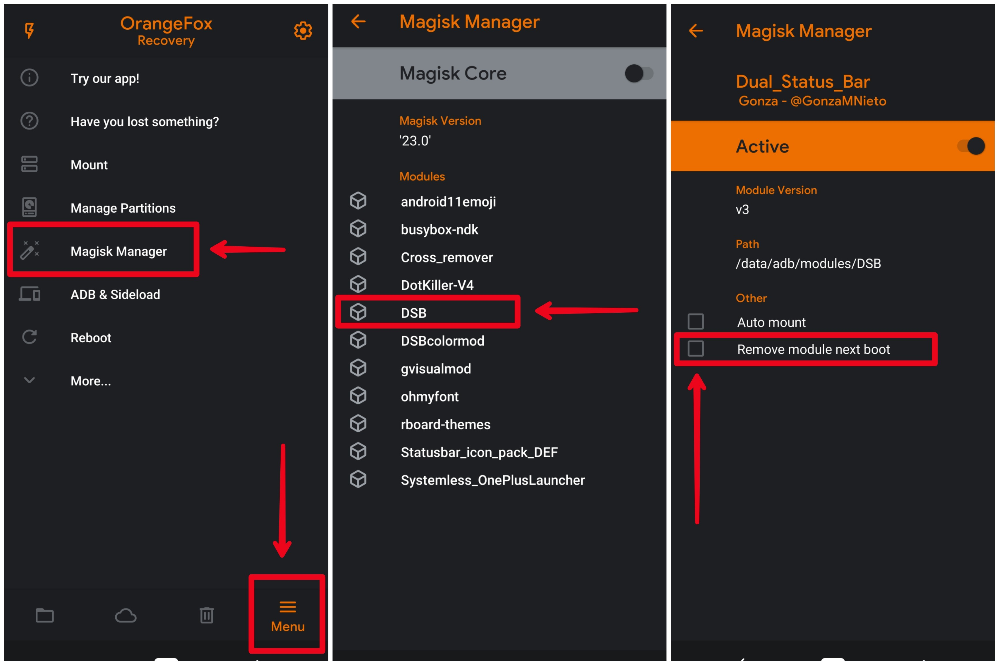
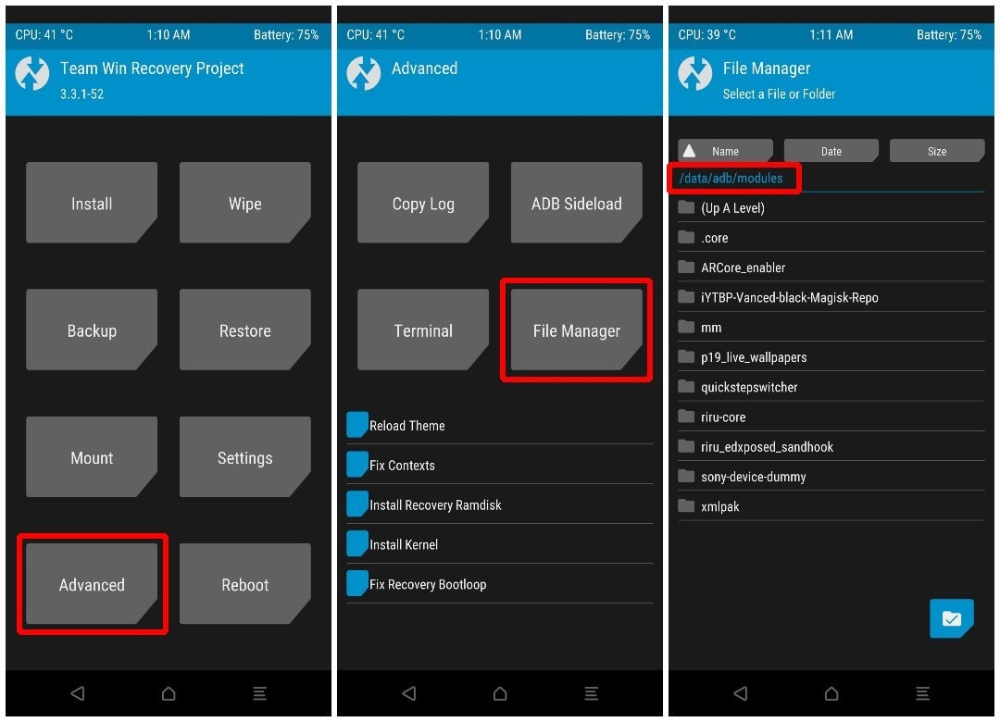

Magisk Module Bootloopfix
Remove Magisk Modules using Recovery-
So how to delete a Magisk module from Recovery in case of bootloops or any other isssues?
Note: These instruction applies to every Magisk Module (for other modules, choose your module name)
Here you have two options.
The first one is specific to OrangeFox, the second one will work on TWRP and every other recovery:
Option 1 - From OrangeFox's Magisk Manager
Option 2 - Manually from File Manager
This is the easier way to delete a Magisk module from recovery. Boot to OrangeFox with your buttons combination and then:
1) Tap on "Menu" on the bottom right corner, then tap on "Magisk Manager" option.
2) Among all your Magisk modules, find the module that you last installed, which is probably the cause of the bootloop (for DSB there might be folder named DSB). Then tap on the name of the module.
3) Check the "Remove module next boot" square. It'll ask you to swipe to apply changes, do it.
4) You're good to go! On Menu > Reboot > System you'll be able to boot your device again.
Refer screenshots below-

This is a slightly slower option than the first one, It'll work on TWRP, OrangeFox, and other recoveries. The steps will be the same, so boot to recovery using your buttons combination and then:
1) For TWRP, select Advanced > File Manager. For OrangeFox, select "Files" on the bottom left corner. Navigate to /data/adb/modules.
2) Among all your Magisk modules, find the folder for the module that you last installed, which is probably the cause of the bootloop (for DSB there might be folder named DSB).
3) For TWRP, tap on the folder to get inside it, and then tap on the check button of the bottom-right corner. For OrangeFox, long-press the folder of the module you want to delete.
4) From the available options, select Delete. Then swipe to confirm the process.
5) You're good to go! For TWRP, get back to the main page and select Reboot > System. For OrangeFox, on the bottom right corner select Menu > Reboot > System.
Done 😊
Refer screenshots below-
